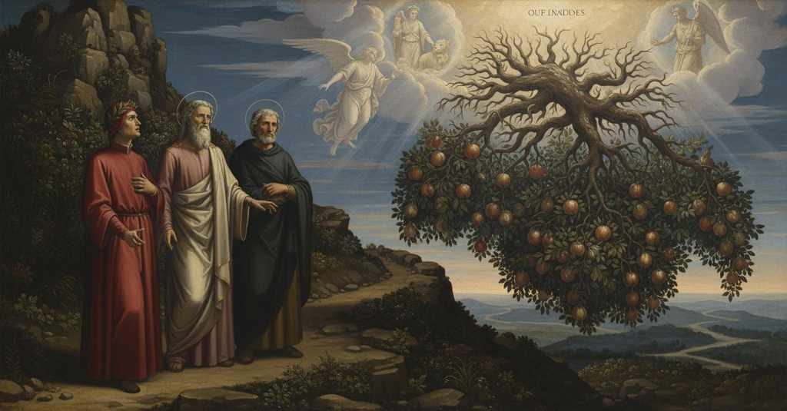

Purgatorio — Canto 22

Statius reveals that Virgil's poetry led him from prodigality to secret Christianity before the poets reach the terrace of gluttony, where a voice from a tree recites examples of temperance. スタティウスはウェルギリウスの詩によって改宗したと明かし、一行は美食の圏で節制の模範を示す声を聞く。
1
Già era l’angel dietro a noi rimaso,
The angel was already left behind us,
すでに天使は我らの後ろに残り、
2
l’angel che n’avea vòlti al sesto giro,
the angel who had turned us to the sixth circle,
我らを第六の環道へと向けた天使は、
3
avendomi dal viso un colpo raso;
having erased from my face one stroke;
我が顔から一撃を消し去っていた。
4
e quei c’hanno a giustizia lor disiro
and those who have their desire for justice
そして正義を渇望する者たちは
5
detto n’avea beati, e le sue voci
he had called blessed, and his words
幸いなりと我らに告げ、その声は
6
con ‘sitiunt’, sanz’ altro, ciò forniro.
with ‘sitiunt,’ and nothing more, furnished this.
『渇く』の一語のみで、それを終えた。
7
E io più lieve che per l’altre foci
And I, lighter than at the other passages,
そして私は他のどの道よりも身軽に
8
m’andava, sì che sanz’ alcun labore
was going, so that without any labor
進んでいき、何の苦労もなく
9
seguiva in sù li spiriti veloci;
I followed the swift spirits upward;
速やかな魂たちの後を上っていった。
10
quando Virgilio incominciò: «Amore,
when Virgil began: «Love,
その時ウェルギリウスが語り始めた。「愛は、
11
acceso di virtù, sempre altro accese,
ignited by virtue, has always ignited another,
徳によって燃え上がり、常に他の愛を燃え上がらせる、
12
pur che la fiamma sua paresse fore;
if only its flame appeared outwardly;
その炎が外に現れさえすれば。
13
onde da l’ora che tra noi discese
whence from the hour that among us descended
ゆえに、ユウェナリスが我らの間に下りてきた時から
14
nel limbo de lo ’nferno Giovenale,
into the limbo of Hell Juvenal,
地獄の辺獄に、彼が
15
che la tua affezion mi fé palese,
who made your affection plain to me,
君の愛情を私に明らかにしてくれた時から、
16
mia benvoglienza inverso te fu quale
my benevolence toward you was such
私の君への好意は、いまだ見ぬ人に
17
più strinse mai di non vista persona,
as never bound one to an unseen person,
かつて抱かれたどんな強い情愛よりも固く結ばれ、
18
sì ch’or mi parran corte queste scale.
so that now these stairs will seem short to me.
だから今やこの階段も短く思えるほどだ。
19
Ma dimmi, e come amico mi perdona
But tell me, and as a friend forgive me
だが教えてくれ、そして友として許してほしい、
20
se troppa sicurtà m’allarga il freno,
if too much confidence loosens my rein,
もし過剰な安心が私の手綱を緩めすぎるなら、
21
e come amico omai meco ragiona:
and as a friend now reason with me:
そして友として今や私と語り合ってほしい。
22
come poté trovar dentro al tuo seno
how could avarice find a place
いかにして君の胸の内に見出すことができたのか、
23
loco avarizia, tra cotanto senno
within your breast, among so much wisdom
貪欲がその場所を、あれほどの知恵に満ちた
24
di quanto per tua cura fosti pieno?».
with which through your own efforts you were filled?».
君が自らの配慮で満たしたその心の中に？」。
25
Queste parole Stazio mover fenno
These words made Statius move
これらの言葉はスタティウスを動かし、
26
un poco a riso pria; poscia rispuose:
a little to a smile at first; then he replied:
まず少し微笑ませた。それから彼は答えた。
27
«Ogne tuo dir d’amor m’è caro cenno.
«Every word of yours is a dear sign of love to me.
「君の言葉はどれも、私には愛の尊いしるしです。
28
Veramente più volte appaion cose
Truly, things often appear
実のところ、しばしば物事は現れるものです、
29
che danno a dubitar falsa matera
that give false matter for doubt
偽りの事柄に疑いを抱かせるような、
30
per le vere ragion che son nascose.
because the true reasons are hidden.
隠されている真実の理由のために。
31
La tua dimanda tuo creder m’avvera
Your question makes clear to me your belief
君の問いは、君の信じていることを私に確信させる、
32
esser ch’i’ fossi avaro in l’altra vita,
that I was avaricious in the other life,
私が前の世で貪欲であったと、
33
forse per quella cerchia dov’ io era.
perhaps because of that circle where I was.
恐らくは私がいたあの環のゆえに。
34
Or sappi ch’avarizia fu partita
Now know that avarice was set
さて知りたまえ、貪欲は私からは
35
troppo da me, e questa dismisura
too far from me, and this excess
あまりに懸け離れていた、そしてこの不節制を
36
migliaia di lunari hanno punita.
thousands of moons have punished.
何千もの月が罰してきたのだ。
37
E se non fosse ch’io drizzai mia cura,
And if it were not that I set my ways straight,
そしてもし私が自らの配DENSOを正さなかったならば、
38
quand’ io intesi là dove tu chiame,
when I understood that place where you cry out,
君が叫ぶあの箇所を私が理解した時に、
39
crucciato quasi a l’umana natura:
as if angered at human nature:
ほとんど人間の本性に憤って、
40
‘Per che non reggi tu, o sacra fame
‘Why do you not govern, o sacred hunger
『なぜ汝は統べぬのか、おお、聖なる黄金の餓えよ、
41
de l’oro, l’appetito de’ mortali?’,
of gold, the appetite of mortals?’,
死すべき者たちの欲望を？』と、
42
voltando sentirei le giostre grame.
I would be feeling the grievous jousts by rolling.
私は転がりながら惨めな馬上槍試合を感じていただろう。
43
Allor m’accorsi che troppo aprir l’ali
Then I realized that our hands could open their wings
その時私は気づいたのだ、両の手が使いすぎで
44
potean le mani a spendere, e pente’mi
too wide in spending, and I repented
あまりに翼を広げすぎることを、そして悔い改めた、
45
così di quel come de li altri mali.
of that as well as of my other sins.
そのことと、他の悪しきことどもを。
46
Quanti risurgeran coi crini scemi
How many will rise again with their hair shorn
どれほど多くの者が、髪を剃られて蘇ることか
47
per ignoranza, che di questa pecca
through ignorance, which from this sin
無知ゆえに、この過ちに対する悔い改めを
48
toglie ’l penter vivendo e ne li stremi!
removes repentance in life and at the end!
生きている間も臨終の際も奪う無知ゆえに！
49
E sappie che la colpa che rimbecca
And know that the fault which counters
そして知りたまえ、正反対の罪を
50
per dritta opposizione alcun peccato,
in direct opposition any sin,
咎めるその罪は、
51
con esso insieme qui suo verde secca;
dries up its greenness here together with it;
ここではそれと共にその緑を枯らすのだ。
52
però, s’io son tra quella gente stato
therefore, if I have been among that people
それゆえ、もし私がかの者たちの中にいたのなら、
53
che piange l’avarizia, per purgarmi,
who weep for avarice, to purge myself,
貪欲を嘆く者たちの、我が身を浄めるために、
54
per lo contrario suo m’è incontrato».
it is for its contrary that I have been placed here».
それはその反対の罪のゆえに私に降りかかったのだ」。
55
«Or quando tu cantasti le crude armi
«Now when you sang of the cruel arms
「さて、君がヨカスタの二重の悲しみの
56
de la doppia trestizia di Giocasta»,
of the double sorrow of Jocasta»,
惨たらしい戦いを歌った時」と、
57
disse ’l cantor de’ buccolici carmi,
said the singer of the bucolic poems,
牧歌の歌い手は言った、
58
«per quello che Clïò teco lì tasta,
«from that which Clio there touches on with you,
「クリオが君と共にそこで試すことから察するに、
59
non par che ti facesse ancor fedele
it does not seem that it had yet made you faithful,
まだ君を信者にしてはいなかったようだ、
60
la fede, sanza qual ben far non basta.
the faith, without which good deeds are not enough.
その信仰がなければ善行も足りぬという信仰に。
61
Se così è, qual sole o quai candele
If that is so, what sun or what candles
もしそうなら、いかなる太陽、いかなる蝋燭が
62
ti stenebraron sì, che tu drizzasti
so dispelled your darkness, that you then set
君の闇を晴らしたのか、君がその後
63
poscia di retro al pescator le vele?».
your sails to follow the fisherman?».
漁師の後を追って帆を揚げられるほどに？」。
64
Ed elli a lui: «Tu prima m’invïasti
And he to him: «You first sent me
そして彼は師に言った。「あなたがまず私を遣わしたのです、
65
verso Parnaso a ber ne le sue grotte,
toward Parnassus to drink in its grottoes,
パルナソスに向かい、その洞窟で飲むようにと、
66
e prima appresso Dio m’alluminasti.
and you first, next to God, illuminated me.
そしてあなたがまず神のもとへと私を照らしてくれた。
67
Facesti come quei che va di notte,
You did as one who walks by night,
あなたは夜に行く者のようになさった、
68
che porta il lume dietro e sé non giova,
who carries a light behind him and helps not himself,
彼は灯りを背後に運び、自分には益なく、
69
ma dopo sé fa le persone dotte,
but makes the people after him wise,
だが自分の後に続く者たちを賢くする、
70
quando dicesti: ‘Secol si rinova;
when you said: ‘The age is renewed;
あなたがこう言われた時に。『世は改まり、
71
torna giustizia e primo tempo umano,
justice returns and the first human age,
正義と人の初めの時代が戻り、
72
e progenïe scende da ciel nova’.
and a new progeny descends from heaven.’
新たな子孫が天から下る』と。
73
Per te poeta fui, per te cristiano:
Through you I was a poet, through you a Christian:
あなたによって私は詩人となり、あなたによってキリスト教徒となった。
74
ma perché veggi mei ciò ch’io disegno,
but so you may see better what I sketch out,
だが、私が描くものを君がよりよく見るために、
75
a colorare stenderò la mano.
I will stretch out my hand to color it in.
手を伸ばして彩りを加えよう。
76
Già era ’l mondo tutto quanto pregno
Already the whole world was pregnant
すでに全世界はことごとく満ちていた、
77
de la vera credenza, seminata
with the true belief, sown
真の信仰に、それは種蒔かれていた、
78
per li messaggi de l’etterno regno;
by the messengers of the eternal kingdom;
永遠の王国の使者たちによって。
79
e la parola tua sopra toccata
and your word touched on above
そして先に触れたあなたの言葉は
80
si consonava a’ nuovi predicanti;
was in harmony with the new preachers;
新しい説教者たちと調和していた。
81
ond’ io a visitarli presi usata.
wherefore I took up the habit of visiting them.
それゆえ私は彼らを訪ねるのを常とした。
82
Vennermi poi parendo tanto santi,
They came then to seem to me so holy,
やがて彼らは私にはかくも聖なる者に見えるようになり、
83
che, quando Domizian li perseguette,
that, when Domitian persecuted them,
ドミティアヌス帝が彼らを迫害した時には、
84
sanza mio lagrimar non fur lor pianti;
their plaints were not without my tears;
私の涙なくして彼らの嘆きはなかった。
85
e mentre che di là per me si stette,
and while I remained on that side,
そして私がかの世にいる間、
86
io li sovvenni, e i lor dritti costumi
I helped them, and their righteous customs
私は彼らを助け、彼らの正しい習慣は
87
fer dispregiare a me tutte altre sette.
made me despise all other sects.
私に他のすべての宗派を軽蔑させた。
88
E pria ch’io conducessi i Greci a’ fiumi
And before I led the Greeks to the rivers
そして私がギリシャ人をテーベの川へと
89
di Tebe poetando, ebb’ io battesmo;
of Thebes in my poetry, I received baptism;
詩を詠みつつ導く前に、私は洗礼を受けた。
90
ma per paura chiuso cristian fu’mi,
but for fear I was a secret Christian,
しかし恐れのために、私は隠れキリスト教徒となり、
91
lungamente mostrando paganesmo;
for a long time making a show of paganism;
長く異教を装っていた。
92
e questa tepidezza il quarto cerchio
and this lukewarmness made me circle the fourth circle
そしてこの生温さが第四の環を
93
cerchiar mi fé più che ’l quarto centesmo.
for more than the fourth century.»
四世紀以上にわたって巡らせたのだ。
94
Tu dunque, che levato hai il coperchio
«You, then, who have lifted the cover
さて、あなたは、蓋を取り払ってくださった、
95
che m’ascondeva quanto bene io dico,
that hid from me how much good I speak of,
私が語るほどの善を私から隠していた、
96
mentre che del salire avem soverchio,
while for climbing we have time to spare,
登るにまだ余裕がある間に、
97
dimmi dov’ è Terrenzio nostro antico,
tell me where our ancient Terence is,
我らが古のテレンティウスはどこにいるか
98
Cecilio e Plauto e Varro, se lo sai:
Caecilius and Plautus and Varro, if you know:
教えてください、チェチリオとプラウトゥスとヴァッロも、もしご存知なら。
99
dimmi se son dannati, e in qual vico».
tell me if they are damned, and in what ward».
彼らが地獄に堕とされているか、そしてどの圏にいるのかを」。
100
«Costoro e Persio e io e altri assai»,
«These men and Persius and I and many others»,
「彼らとペルシウスと私、そして他の多くの者たちは」、
101
rispuose il duca mio, «siam con quel Greco
replied my leader, «are with that Greek
と私の導き手は答えた、「あのギリシャ人と共にいる、
102
che le Muse lattar più ch’altri mai,
whom the Muses nursed more than any other,
誰よりもムーサたちに乳を飲まされた、
103
nel primo cinghio del carcere cieco;
in the first circle of the blind prison;
盲目の牢獄の第一の環道に。
104
spesse fïate ragioniam del monte
often we speak of the mountain
しばしば我らはあの山のことを語り合う、
105
che sempre ha le nutrice nostre seco.
that always has our nurses with it.
常に我らの乳母たちを擁している。
106
Euripide v’è nosco e Antifonte,
Euripides is there with us, and Antiphon,
エウリピデスも我らと共におり、アンティフォンも、
107
Simonide, Agatone e altri piùe
Simonides, Agathon, and many other
シモニデス、アガトン、そして他の多くの、
108
Greci che già di lauro ornar la fronte.
Greeks who once adorned their brows with laurel.
かつて月桂樹で額を飾ったギリシャ人たちも。
109
Quivi si veggion de le genti tue
There one sees some of your people:
そこにはあなたの民の者たちが見られる、
110
Antigone, Deïfile e Argia,
Antigone, Deiphyle, and Argia,
アンティゴネ、デイフィレ、アルギア、
111
e Ismene sì trista come fue.
and Ismene, as sad as she once was.
そして、かつてのように悲しみに沈むイスメネも。
112
Védeisi quella che mostrò Langia;
One sees her who pointed out Langia;
ランギアの泉を示した女も見られる。
113
èvvi la figlia di Tiresia, e Teti,
there is the daughter of Tiresias, and Thetis,
そこにはティレシアスの娘がおり、テティスも、
114
e con le suore sue Deïdamia».
and with her sisters, Deidamia».
そしてその姉妹たちと共にデイダミアも」。
115
Tacevansi ambedue già li poeti,
Both the poets now fell silent,
二人の詩人たちはすでに黙り込み、
116
di novo attenti a riguardar dintorno,
newly attentive to looking around,
新たに周囲を見回すことに注意を向けていた、
117
liberi da saliri e da pareti;
free from ascents and from walls;
登攀からも壁からも解放されて。
118
e già le quattro ancelle eran del giorno
and already the four handmaidens of the day
そしてすでに一日の四人の侍女たちは
119
rimase a dietro, e la quinta era al temo,
were left behind, and the fifth was at the pole,
後ろに残り、第五の侍女が車の轅にいた、
120
drizzando pur in sù l’ardente corno,
directing its burning horn straight up,
燃える角をまっすぐ上に向けながら。
121
quando il mio duca: «Io credo ch’a lo stremo
when my leader said: «I believe that toward the edge
その時、私の導き手は言った。「私は思う、
122
le destre spalle volger ne convegna,
it is fitting for us to turn our right shoulders,
外縁に右の肩を向けるのが我らにとって相応しいと、
123
girando il monte come far solemo».
circling the mountain as we are accustomed to do».
いつもするように山を巡りながら」。
124
Così l’usanza fu lì nostra insegna,
Thus custom was our banner there,
かくして、慣習がそこでの我らの標となり、
125
e prendemmo la via con men sospetto
and we took the way with less suspicion
我らはよりためらいなく道を進んだ、
126
per l’assentir di quell’ anima degna.
because of the assent of that worthy soul.
あの高貴な魂の同意によって。
127
Elli givan dinanzi, e io soletto
They went on ahead, and I all alone
彼らは前を行き、そして私一人が
128
di retro, e ascoltava i lor sermoni,
behind, and I listened to their discourses,
後ろで、彼らの談話に耳を傾けていた、
129
ch’a poetar mi davano intelletto.
which gave me understanding of the art of poetry.
それは詩作のための知性を私に与えてくれた。
130
Ma tosto ruppe le dolci ragioni
But soon the sweet discussions were broken
しかし、すぐにその甘美な語らいを破った
131
un alber che trovammo in mezza strada,
by a tree we found in the middle of the road,
道の半ばで見つけた一本の木が、
132
con pomi a odorar soavi e buoni;
with fruits that smelled sweet and good;
甘く良い香りを放つ果実をつけていた。
133
e come abete in alto si digrada
and as a fir tree tapers upward
そして樅の木が上へ向かって細くなるように
134
di ramo in ramo, così quello in giuso,
from branch to branch, so did that one downward,
枝から枝へと、その木は下へ向かって細くなっていた、
135
cred’ io, perché persona sù non vada.
I believe, so that no person might climb it.
思うに、誰も上へ登れぬようにするためだろう。
136
Dal lato onde ’l cammin nostro era chiuso,
From the side where our path was closed,
我らの道が閉ざされていた側から、
137
cadea de l’alta roccia un liquor chiaro
a clear liquid fell from the high rock
高い岩から澄んだ液体が落ちてきて
138
e si spandeva per le foglie suso.
and was sprinkled through the leaves above.
上の方の葉々へと広がっていた。
139
Li due poeti a l’alber s’appressaro;
The two poets approached the tree;
二人の詩人はその木に近づいた。
140
e una voce per entro le fronde
and a voice from within the foliage
すると葉叢の中から一つの声が
141
gridò: «Di questo cibo avrete caro».
cried out: “Of this food you shall have scarcity.”
叫んだ、「この食べ物は汝らにとって欠乏するであろう」。
142
Poi disse: «Più pensava Maria onde
Then it said: “Mary thought more of how
それから言った、「マリアは、いかにして
143
fosser le nozze orrevoli e intere,
the wedding feast might be honorable and complete,
婚礼が名誉ある完全なものになるかを、より考えておられた、
144
ch’a la sua bocca, ch’or per voi risponde.
than of her own mouth, which now answers for you.
今や汝らのために応える、ご自身の口のことよりも。
145
E le Romane antiche, per lor bere,
And the ancient Roman women, for their drink,
そして古代ローマの女たちは、飲み物として、
146
contente furon d’acqua; e Danïello
were content with water; and Daniel
水で満足した。そしてダニエルは
147
dispregiò cibo e acquistò savere.
despised food and acquired wisdom.
食を軽んじて、知恵を得た。
148
Lo secol primo, quant’ oro fu bello,
The first age, how golden it was,
黄金のように美しかった最初の時代は、
149
fé savorose con fame le ghiande,
made acorns savory with hunger,
飢えをもって団栗を美味しくさせ、
150
e nettare con sete ogne ruscello.
and every stream nectar with thirst.
渇きをもってあらゆる小川を神酒にした。
151
Mele e locuste furon le vivande
Honey and locusts were the foods
蜜と蝗が食事であった、
152
che nodriro il Batista nel diserto;
that nourished the Baptist in the desert;
荒野で洗礼者を養ったのは。
153
per ch’elli è glorïoso e tanto grande
for which he is glorious and so great
それゆえに彼は栄光に満ち、かくも偉大なのである、
154
quanto per lo Vangelio v’è aperto».
as is revealed to you by the Gospel.”
福音書によって汝らに明かされているように」。